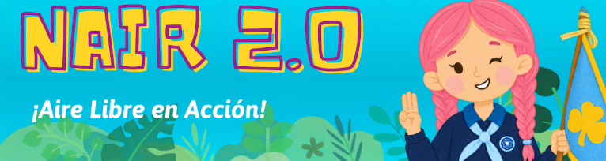
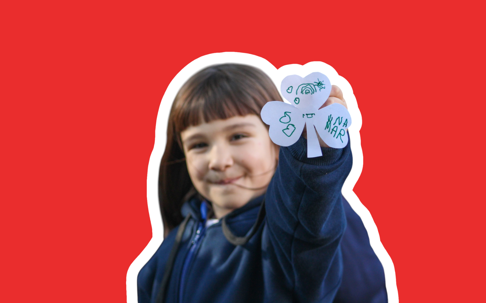
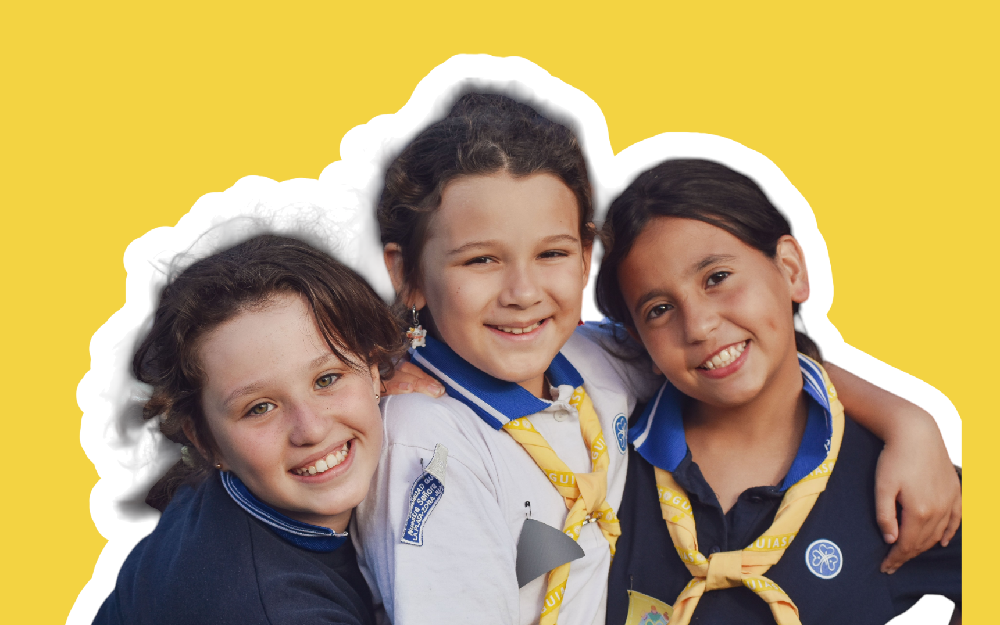
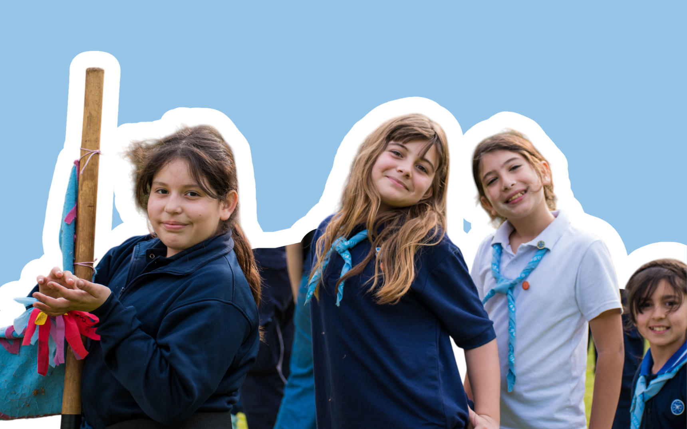
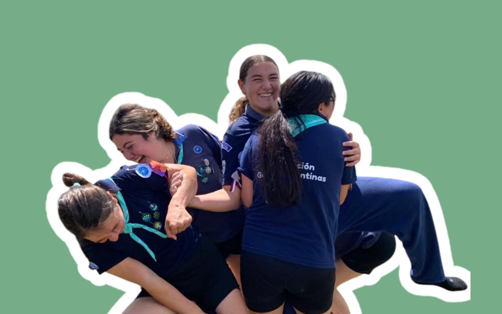
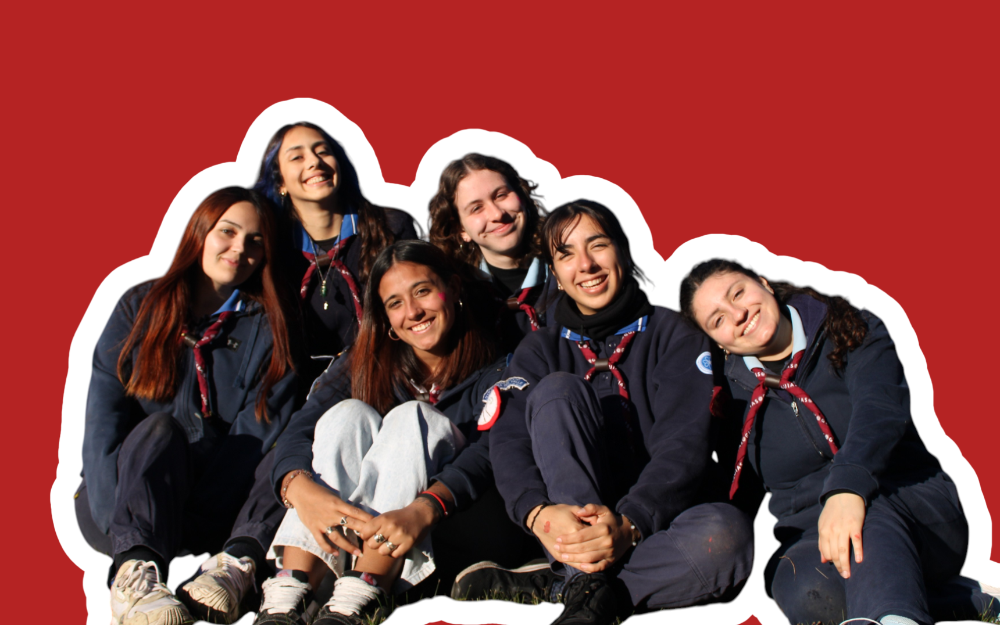
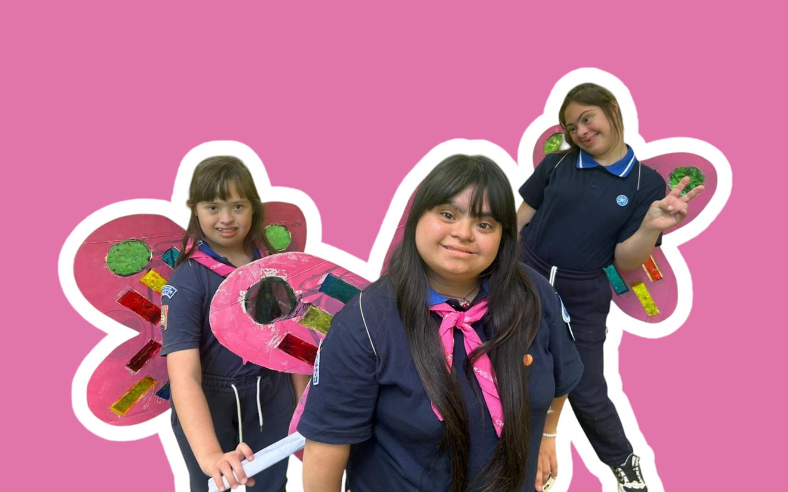
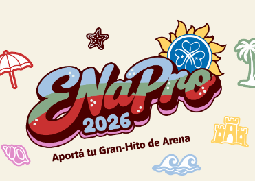

¡ACCEDÉ A TODO EL MATERIAL!
Pimpollitos
Alitas
Guías en Caravana
Guías del Sol
Guías Mayores
Mariposas
¡Enterate de todo lo que sucedió en el último Encuentro Nacional de Programa!

Accedé al material